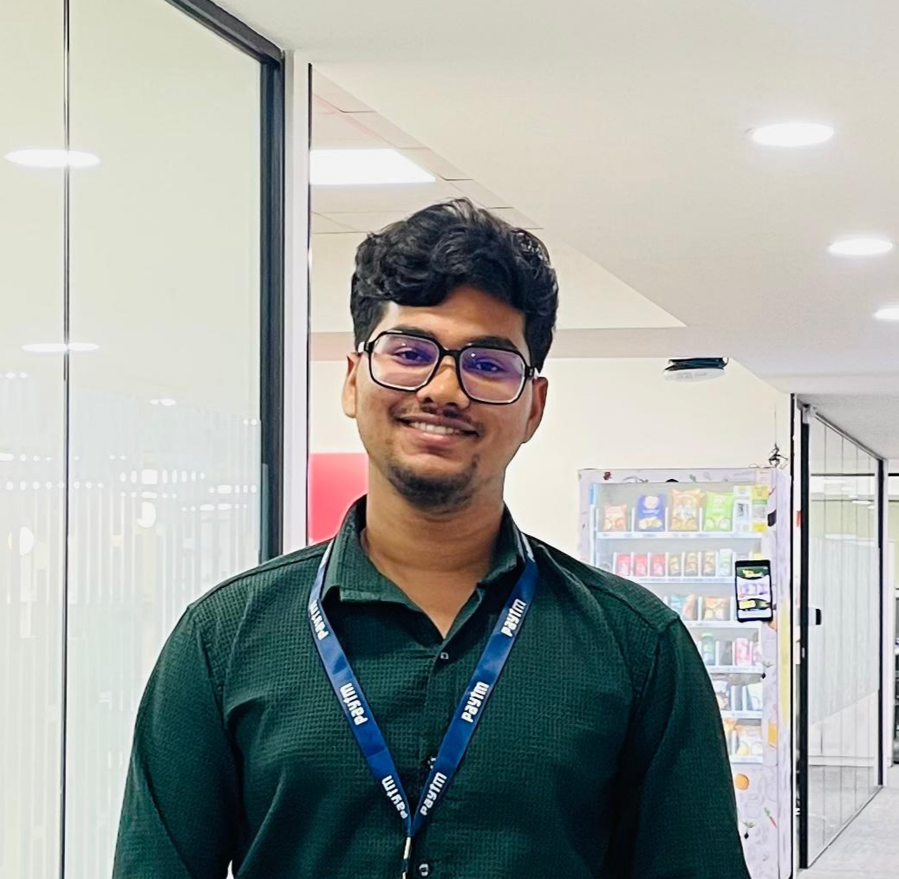

AI Developer
Building AI apps with a focus on useful product workflows and automation.


I build AI products and developer tools.
Full-stack developer building AI and workflow tooling
Building AI apps with a focus on useful product workflows and automation.
Part of an AI/ML team building machine learning models and real-world data-driven solutions.
Paytm · Bengaluru, India
IIT Bombay Tech-Fest · Mumbai, India
A Tony Stark-inspired AI assistant with a FastMCP backend and LiveKit voice agent. It listens, reasons through an LLM, calls tools in real time, and speaks back through TTS.
A VS Code extension foundation that tracks development context signals like file switching, cursor movement, and text selection to reconstruct developer workflow state.